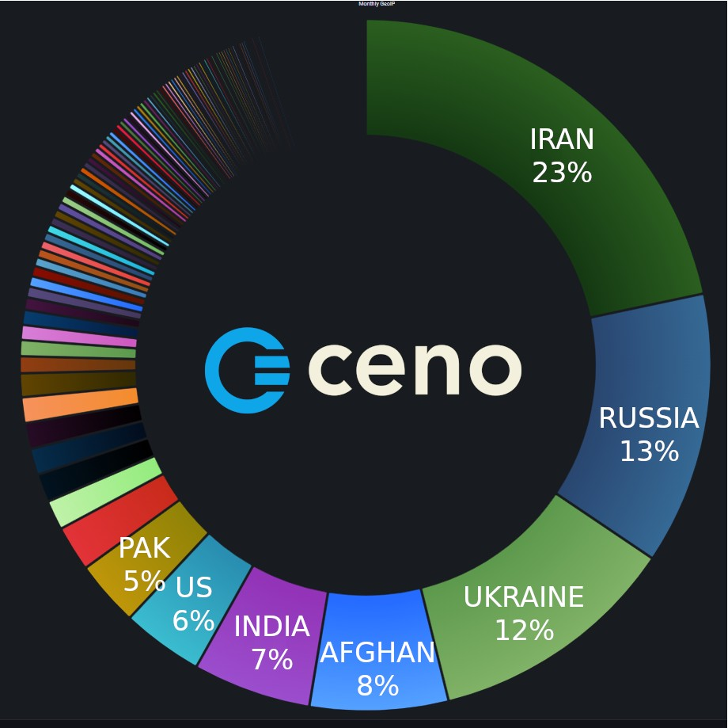

Ceno proves itself in Iran during Internet shutdowns
Decentralized mobile web browser enables people to access and share information regardless of censorship
Montreal, December 15, 2022 – eQualitie is pleased to announce that its Ceno Browser is fulfilling its mission of assisting thousands in Iran, while also advancing its usefulness in the Russia-Ukraine war. Short for censorship.no, Ceno allows individual mobile users to access and share global web content in spite of Internet censorship tactics and in areas of limited connectivity. In 2022 to date, Ceno has helped tens of thousands in Iran, even while their Internet connections have been thwarted.
Internet shutdowns are becoming more common in undemocratic countries, intensifying the need for decentralized services and tools such as Ceno. In Iran, since protests started to surge in mid-September, the regime has been particularly aggressive in suppressing communication outside of its intranet infrastructure, the National Information Network. Among other things, the authorities have been blocking websites and social platforms; disabling mobile data; encrypting DNS services; and collapsing networks.
Ceno has persisted around these ploys, using its robust peer-to-peer backbone, Ouinet, to sidestep every blockage, filter, shutdown and attack. The Ceno team is able to extrapolate from its decentralized network that thousands in Iran are now actively using the browser to bypass the national intranet. Ceno’s usage also continues to grow in other censored countries, such as Russia, Afghanistan, Ukraine, Pakistan, India, Yemen, Bangladesh and Myanmar. Each install expands the network by creating bridges between devices and enabling users to share blocked, filtered and censored web content.
“It is gratifying to watch Ceno in action when it matters,” said Dmitri Vitaliev, founder and director of eQualitie. “Where the people of Iran could not access information freely, they can now rely on Ceno to help them navigate their situation and freely access information that is otherwise censored on the Iranian network.”
"Impressive platform,” states a Google Play Store reviewer. “You can't imagine how useful and brilliant it is if you don't live in countries like Iran.”
Ceno works on Android devices, and version 2.0 s set to be released in the coming week on Google Play, censorship.no and Paskoocheh (Farsi for Alley Way). Its open-source code is available on Gitlab. Ceno is one of several digital democratization projects envisioned and developed by eQualitie, which partners with organizations such as the Toronto-based technology group ASL19 to offer practical responses to online access and information challenges. For more information, access the Ceno fact sheet.
About eQualitie
Since its foundation in 2010, eQualitie has been inspired by the principles of freedom of expression and association as defined in Articles 18, 19 and 20 of the UN’s Universal Declaration of Human Rights. Headquartered in Montreal, eQualitie’s team is distributed globally, including on the ground in censored and conflict areas. eQualitie is funded by public grants, private foundations and revenue generated from commercial activities. For more information, visit https://equalit.ie.
Press Contact
For press and media inquiries, please contact Jenny Ryan: press [at] equalitie [dot] org.
 Download PDF
Download PDF